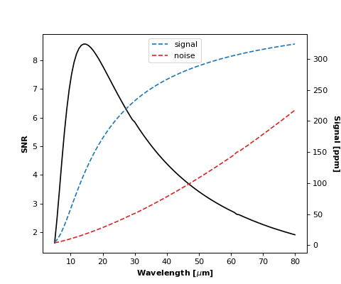
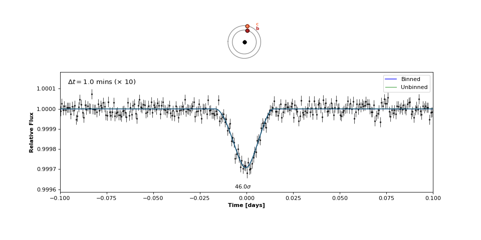

ost_example.py ¶
Routines for generating synthetic OST observations of planet-planet occultations in TRAPPIST-1.
-
scripts.ost_example.SNR_v_wavelength()¶ Signal-to-noise ratio of an occultation of TRAPPIST-1c by TRAPPIST-1b as a function of wavelength for OST, assuming 5 micron-wide filters.

-
scripts.ost_example.Stacked_bc(N=10)¶ Simulate N stacked exposures of b occulting c.

-
scripts.ost_example.Triple_bc()¶ Simulate an observation of a triple occultation of TRAPPIST-1 c by b with OST.